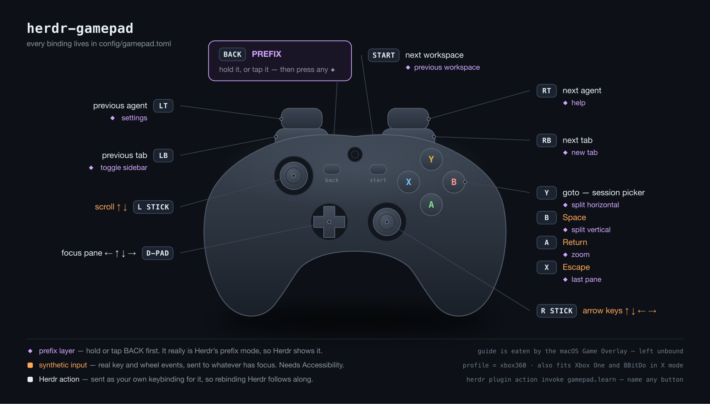

Drive Herdr with a game controller
Patrol your AI agents, split panes and switch workspaces from the couch. Any gamepad, mapped by you in 60 seconds.

gamepad.toml.Install
Hand it to your agent, or do it yourself. Both take about a minute.
Install the herdr-gamepad plugin from https://github.com/htlin222/herdr-gamepad
into my Herdr setup on macOS. Work through it step by step and stop to tell me
whenever you need something from me:
1. Check that `herdr` is on PATH and is version 0.7.0 or newer (`herdr --version`),
and that `swiftc` exists (`swiftc --version`). If swiftc is missing, tell me to
run `xcode-select --install` and wait.
2. Install the plugin: `herdr plugin install https://github.com/htlin222/herdr-gamepad`
This runs build.sh, which compiles a single dependency-free Swift binary.
3. Copy the sample config into place:
`cp config/gamepad.toml "$(herdr plugin config-dir gamepad)/gamepad.toml"`
4. Add a keybinding to ~/.config/herdr/config.toml so I can reach learn mode:
[[keys.command]]
key = "prefix+g"
type = "plugin_action"
command = "gamepad.learn"
description = "Gamepad learn mode"
then `herdr server reload-config`.
5. Start the daemon: `herdr plugin action invoke gamepad.start`, then confirm with
`herdr plugin action invoke gamepad.status`.
6. Tell me to grant Accessibility permission to the terminal that started the daemon
(System Settings -> Privacy & Security -> Accessibility). This is only needed
for the [input] block: arrow keys, Return/Escape/Space and scrolling. Herdr actions
work without it. Restart the daemon after I approve.
7. Verify: `herdr plugin action invoke gamepad.learn`, and tell me to press a few
buttons and report what names appear.
herdr plugin install https://github.com/htlin222/herdr-gamepad cp config/gamepad.toml "$(herdr plugin config-dir gamepad)/gamepad.toml" herdr plugin action invoke gamepad.start
- macOS
- Herdr 0.7.0 or newer
- Swift — ships with the Xcode command line tools
(
xcode-select --install) - A gamepad. USB or Bluetooth, Xbox-style or 8BitDo in X mode.
No npm, no native module, no runtime dependency. build.sh
produces one binary.
Map your pad
Plug a controller in and press something — the picture lights up and the table
jumps to that row. Pick actions, then copy the gamepad.toml below.
Read live from the browser's Gamepad API, which reports the same W3C standard layout the plugin's names follow — so whatever lights up here is exactly the name to write in the TOML. Nothing leaves your tab.
$(herdr plugin config-dir gamepad)/gamepad.toml
Manual
Everything between plugging the pad in and forgetting it is there.
1 · Two blocks, one shape
Bindings split by who is being talked to, and both use the same shape as
Herdr's own [keys]:
[herdr] # operations on Herdr
next_agent = "rt"
next_tab = "rb"
focus_pane_left = "dpad_left"
[input] # pretend to be a keyboard or mouse
return = "a"
up = { input = "right_up", repeat = true }
Everything in [herdr] is sent as your keybinding for
it, so the controller behaves exactly like the keyboard. Rebind Herdr and this
follows along — nothing to update here. Bind several inputs to one behaviour
with a list, exactly like Herdr:
focus_pane_left = ["dpad_left", "left_left"].
2 · The prefix layer
One button gives every other input a second meaning, the way tmux's prefix key
works. Despite the name, hold is reached two ways, and both are always
live:
| Hold | keep BACK down, press B |
| Tap | press and release BACK on its own, then press B within
prefix_timeout_ms |
Tapping the armed prefix again backs out of it. Anything else you press spends it,
so a stray tap costs you one button, not a mode you are stuck in. Set
prefix_timeout_ms = 0 to switch tapping off and keep hold only.
A button used as a prefix never does anything by itself.
ctrl+a) for real, the moment your thumb
lands — so Herdr shows the mode exactly as it does from the keyboard, and the
second press is a plain key rather than a chord this plugin fakes.
The price: everything in the layer has to be a Herdr action you bound
through the prefix, e.g. split_vertical = "prefix+b" in
config.toml. Prefix mode eats the next key, so these are refused at
startup, each with a message naming the binding:
| Refused | Why |
|---|---|
an [input] keystroke |
it would go to Herdr, not to your pane |
a built-in (agent_*) |
talks over the socket and sends no key at all, so the mode would stay open |
| a non-prefix binding | next_tab = "shift+right" — Herdr would eat the chord and match nothing |
Put those in the base layer instead; that is what the base layer is for.
3 · Accessibility permission
The [input] block synthesises real key and wheel events, and macOS will
not let any process do that without permission:
[herdr] block needs
none of this.
4 · Reach the plugin from the keyboard
Herdr 0.7 does not bind keys declared in a plugin manifest, and plugin actions run
without a TTY — which is why every interactive flow reports through
notifications rather than printing to a terminal. Bind learn mode yourself in
~/.config/herdr/config.toml:
[[keys.command]] key = "prefix+g" type = "plugin_action" command = "gamepad.learn" description = "Gamepad learn mode"
then herdr server reload-config.
5 · Plugin actions
| Action | What it does |
|---|---|
gamepad.setup | guided setup, writes your controller profile |
gamepad.learn | show button IDs as you press them |
gamepad.start | start the daemon |
gamepad.stop | stop the daemon |
gamepad.status | connected pads, daemon state |
Run any of them with herdr plugin action invoke gamepad.<id>.
6 · Tuning
| Key | Default | What it changes |
|---|---|---|
deadzone | 0.25 | how far a stick moves before it counts. Raise it if things trigger on their own. |
trigger_threshold | 0.5 | how far lt/rt must be squeezed to count |
repeat_delay_ms | 400 | hold this long before auto-repeat starts |
repeat_rate_ms | 80 | then repeat this often |
scroll_invert | false | flip scroll direction — depends on your macOS natural-scrolling setting, so there is no right default |
prefix_timeout_ms | 2000 | after tapping a prefix, how long it waits for the next button. 0 = hold-only. |
prefix_notify | false | announce an armed prefix as a notification. Off by default: Herdr already shows the mode, and notifications are rate-limited and hidden for the focused tab. |
7 · When it does not work
| Symptom | Cause |
|---|---|
Stick clicks (l3/r3) do nothing |
Many third-party pads declare them and never send them. That is the pad, not the plugin. |
The guide button does nothing |
macOS intercepts it for the Game Overlay before any program can see it. Use back as your prefix instead. |
| Arrow keys and scrolling do nothing | Accessibility permission is missing, or went to the wrong app. It must be the terminal that started the daemon. |
| The daemon refuses to start, naming a binding | Working as intended — something in the prefix layer cannot live there. The message names it; move it to the base layer. |
| Buttons fire on their own | Raise deadzone. |
| Several pads plugged in, the wrong one wins | Pin one with vendor/product under [gamepad]; find the values with gamepad.status. |
8 · Beyond the one-liner form
Herdr has 85 socket methods (herdr api schema --json). Anything the
one-liner form cannot express goes here. In params,
"$focused" becomes the pane that currently has focus.
[[bind]]
button = "x"
hold = "lb"
method = "pane.split"
params = { direction = "right", ratio = 0.5 }
Rationale
Why the design is the way it is, including the parts that look odd.
Why a gamepad at all
Herdr's job is watching several AI agents work. That is not typing — it is waiting, then glancing, then nudging. The keyboard is the wrong shape for it: you sit up, find the home row and hit a chord to answer a question that took one glance to understand. A controller is the right shape for supervision. Two thumbs, no home row, no posture. You can cycle agents from across the room.
Why send your keybinding instead of calling the API
Every [herdr] binding resolves through your
config.toml and is sent as that key. Calling the socket method directly
would have been easier — but then the pad and the keyboard would slowly drift
apart, and Herdr's own ordering logic (which agent counts as "next") would be
reimplemented here, badly. Going through the keybinding means there is exactly one
definition of what next_agent means, and rebinding Herdr updates the pad
for free.
Only genuinely new behaviour earns a built-in: agent_next_waiting,
agent_back, agent_overview, agent_read. Those
need state or more than one API call, so TOML alone cannot express them.
Why the prefix layer is Herdr's real prefix mode
A gamepad has about ten reachable buttons and Herdr has far more than ten commands, so a second layer is not optional. The obvious implementation is to fake it: hold a button, and the plugin quietly sends whatever chord the action needs.
That version was worse. Faking it means Herdr never knows a mode is armed, so it
cannot show you — and a modal interface you cannot see is a modal interface you
will lose track of. So the pad's prefix button sends ctrl+a for real,
the instant your thumb lands. Herdr enters prefix mode, indicator and all, and the
second press is an ordinary key.
The cost is a genuine constraint rather than a bug: prefix mode eats the next key, so the layer can only hold actions Herdr reaches through the prefix. Rather than let that fail silently at 3am, the daemon refuses to start and names the binding. Constraints you learn about at startup are cheaper than constraints you learn about by pressing a button that does nothing.
Why tapping works as well as holding
Holding a shoulder button while reaching a face button is a stretch on small pads and impossible one-handed. Tap-to-arm makes the layer reachable with one thumb. The risk of any modal is being stuck in it, so: tapping the armed prefix again backs out, and anything else spends it. A stray tap costs one button.
Why not the guide button
It is the obvious prefix — big, central, unused by anything else. macOS
intercepts it for the Game Overlay before any program sees it. back is
the next best thing, and is left unbound as an action for exactly this reason.
Why Swift, and why one binary
Reading a controller on macOS means IOHIDManager; synthesising input means CGEvent.
Both are system frameworks. Swift ships with the Xcode command line tools, so
build.sh is one swiftc call and the result is a single file
with no runtime, no node_modules, and nothing to keep up to date. A
plugin that breaks when its dependencies move is a plugin you uninstall.
Why notifications instead of terminal output
Herdr 0.7 runs plugin actions without a TTY, so anything printed goes nowhere a human
will look. Every interactive flow reports through notification.show
instead. This is a workaround for one version, not a preference —
prefix_notify is off by default precisely because notifications are
rate-limited and hidden for the focused tab, which makes them a poor second copy of
state Herdr already shows.
Listed in the Herdr marketplace
The Herdr marketplace index is
built from GitHub repository search. The herdr-plugin topic is the only
signal it uses, the index refreshes every 30 minutes, and there is no submission
form.
| Requirement | This repo |
|---|---|
| Public repository | htlin222/herdr-gamepad |
herdr-plugin topic | set — the index reads it from GitHub's repository search |
herdr-plugin.toml at the root | present, with id, version and min_herdr_version |
| Description and topics | kept accurate; listings show GitHub's own metadata, not manifest fields |
Publishing your own plugin takes the same two commands:
gh repo edit --add-topic herdr-plugin --add-topic herdr --add-topic gamepad gh repo edit --description "Drive Herdr with a game controller."